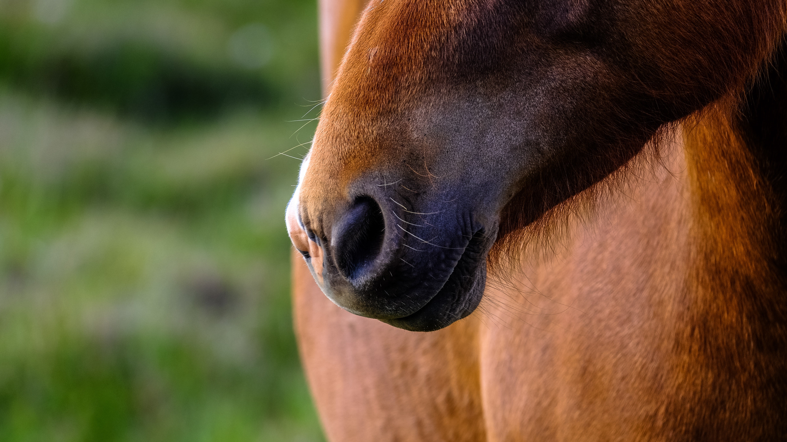
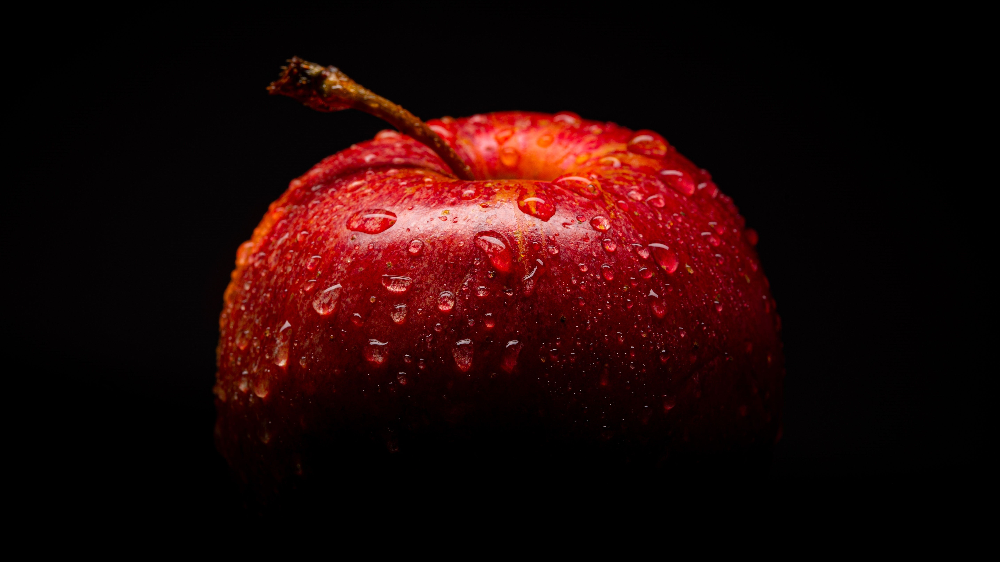

Padaria
Aqui falamos um pouco mais sobre a padaria




Aqui falamos um pouco mais sobre a padaria
Aqui vamos falar um pouquinho mais sobre as cronicas e continuamos a escrever algumas coisas somente com o unico proposito e objetivo de adicionar conteudo e linguiça pra materia
Aqui vamos falar um pouquinho mais sobre as cronicas e continuamos a escrever algumas coisas somente com o unico proposito e objetivo de adicionar conteudo e linguiça pra materia
Aqui vamos falar um pouquinho mais sobre as cronicas e continuamos a escrever algumas coisas somente com o unico proposito e objetivo de adicionar conteudo e linguiça pra materia
Me chamo Anderson Lietz e tenho 21 anos. Moro no interior de Porto União, SC, e faço graduação à distância em Análise e Desenvolvimento de Sistemas. Atualmente estou em busca de um estágio também à distância. Me interessei pela escrita criativa no final do Ensino Médio em 2018, e então passei a escrever algumas crônicas e as publiquei no blog: vacilou.com. Além disso, estou escrevendo um livro de contos do qual pretendo lançar em breve. Enquanto isso, publico algumas crônicas aleatórias. Este site foi desenvolvido por mim com o incentivo e algumas dicas de um amigo programador, com a intenção de aprender programação, desenvolvimento web e algumas tecnologias na prática.
Fale comigo!